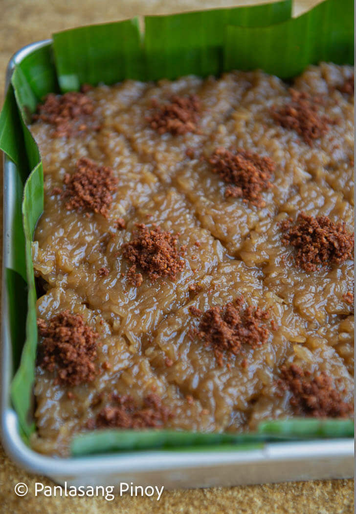

Biko

Ingredients
- 2 cups glutinous rice aka sticky rice or malagkit
- 1 1/2 cups water
- 2 cups brown sugar
- 4 cups coconut milk
- 1/2 tsp salt
Instructions
- Combine the sticky rice and water in a rice cooker and cook until the rice is ready (we intentionally combined lesser amount of water than the usual so that the rice will not be fully cooked)
- While the rice is cooking, combine the coconut milk with brown sugar and salt in a separate pot and cook in low heat until the texture becomes thick. Stir constantly.
- Once the rice is cooked and the coconut milk-sugar mixture is thick enough, add the cooked rice in the coconut milk and sugar mixture then mix well. Continue cooking until all the liquid evaporates (but do not overcook).
- Scoop the cooked biko and place it in a serving plate then flatten the surface. Share and Enjoy!